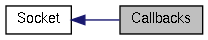

|
Cream-Browser unstable
|
|
Cream-Browser unstable
|
|  |
Functions | |
| static gboolean | control_client_socket (GIOChannel *channel) |
| static gboolean | control_socket (GIOChannel *channel, GIOCondition cond, Socket *s) |
| static gboolean control_client_socket | ( | GIOChannel * | channel | ) | [static] |
| channel | The client GIOChannel |
TRUE to continue reading on the client socket, FALSE to stop any action on it.Control the client socket :
| static gboolean control_socket | ( | GIOChannel * | channel, |
| GIOCondition | cond, | ||
| Socket * | s | ||
| ) | [static] |
| channel | Server GIOChannel. |
| cond | Unused. |
| s | A Socket object. |
TRUE to continue listening, FALSE otherwise.Listening on the socket and accept incomming connection.
 1.7.4
1.7.4